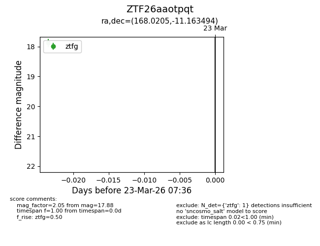
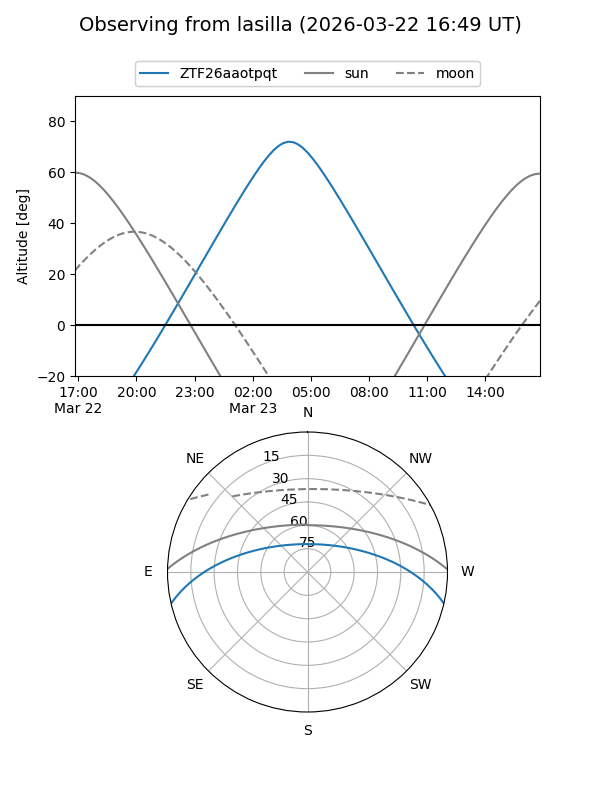
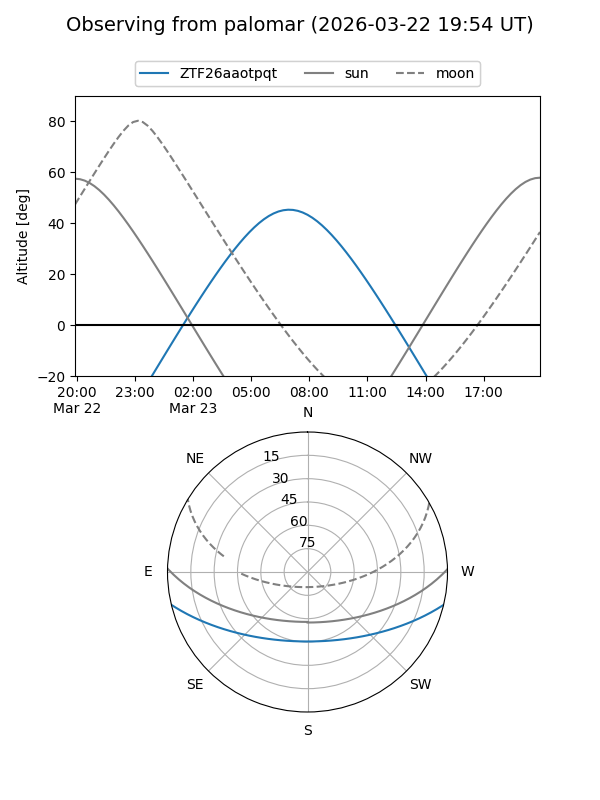

ZTF26aaotpqt
Target ZTF26aaotpqt at 2026-03-23 07:38
Aliases and brokers:
FINK: link
Lasair: link
ALeRCE: link
alt names
ZTF26aaotpqt (ztf,fink_ztf)
Coordinates:
equatorial (ra, dec) = 168.0205,-11.16349
equatorial (HMS+DMS) = 11:12:04.91,-11:09:48.58
galactic (l, b) = (267.4557,+44.75625)
Flags:
Photometry:
last ztfg=17.88
1 ztfg detections
Lightcurve

Visibility


Additional plots